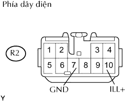

HỆ THỐNG NGHE NHÌN > Mạch chiếu sáng |
| 1.KIỂM TRA DÂY ĐIỆN (BỘ THU SÓNG RAĐIÔ - ẮC QUY VÀ MÁT THÂN XE) |
|  |
Tháo giắc R2 của bộ thu sóng.
Đo điện áp và điện trở của giắc nối phía dây điện.
| Nối dụng cụ đo | Điều kiện tiêu chuẩn |
| R2-7 (GND) - Mát thân xe | Dưới 1 Ω |
| Nối dụng cụ đo | Điều kiện | Điều kiện tiêu chuẩn |
| R2-10 (ILL+) - Mát thân xe | Công tắc điều khiển đèn OFF | Dưới 1 V |
| R2-10 (ILL+) - Mát thân xe | Công tắc điều khiển đèn ở TAIL hay HEAD | 10 đến 14 V |
|
| ||||
| OK | ||
| ||